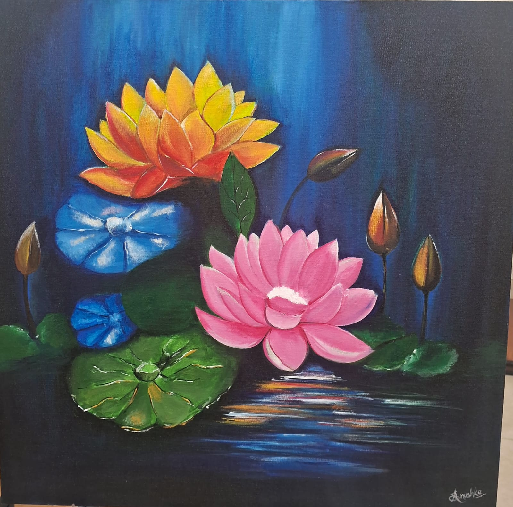

Overview
ACRYLIC PAINTING uses a fast-drying paint made of pigment suspended in acrylic polymer emulsion. Known for its versatility, it can resemble watercolor when diluted or oil paint when applied thickly.
Key Characteristics
Acrylics are popular among both beginners and professionals due to their unique properties:
- Fast Drying: Unlike oil paints, acrylics dry within minutes, allowing for quick layering.
- Water-Soluble: They can be thinned with water, making cleanup easy without harsh chemicals.
- Permanent: Once dry, the paint becomes water-resistant and flexible, preventing cracking over time.
Common Techniques
Artists use various methods to achieve different textures and effects:
- Dry Brushing: Applying paint with a dry brush to create scratchy, textured layers.
- Glazing: Applying thin, transparent layers to build deep, luminous colors.
- Impasto: Using thick, undiluted paint to create visible brushstrokes or palette knife marks.
- Pouring: Mixing paint with a medium to create fluid, marble-like abstract designs.
